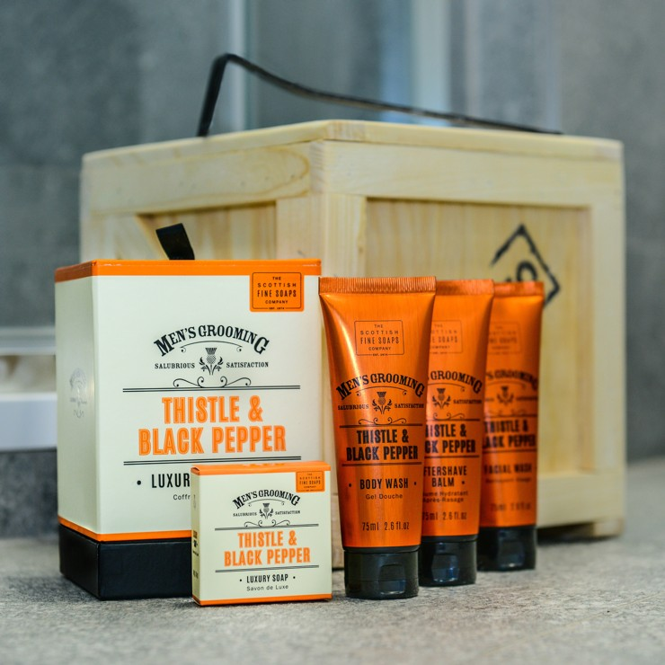

Welcome to Natürliche Gesundheit
Hygiene - Witz des Tages / ~10.000 lustige Witze
2020.12.21 18:36
Navigation
Witz des Tages / ~10.000 lustige Witze HomeTop-Menü
Home Witz des Tages Top-Witze Zufallswitze Tagesarchiv Witze-Newsletter Witzspende Return to ContentHygiene
Von Hein W. am 21. November 2002 in Männer & FrauenSie: Immer, wenn ich die Zehennaegel schneide, bekomme ich Loecher in die Strumpfhose. Er: Hast du versucht, sie vorher auszuziehen?
Hygiene , 3.3 out of 6 based on 19 ratings VN:F [1.9.22_1171] Rating: 3.3/ 6 (19 votes cast)Noch mehr lustige Witze:
Corona-Hygiene Corona desinfiziert sich nach Kontakt mit Chuck Norris die Hände. Graf Bobby sitzt in seiner Küche vor... Graf Bobby sitzt in seiner Küche vor einem riesigen Berg… Du Egon... "Du Egon, warum ist eigentlich deine Verlobung mit Karin in… Qucki Junger Mann sagt seiner Dame nach einem Quickie: "Mein Gott,… Jungfrau Geflüster im Gebüsch: Hey, Baby bist Du doch noch Jungfrau?… Die 30 schlimmsten Dinge Die 30 schlimmsten Dinge, die eine Frau beim Anblick eines…Taschendiebe Heizen
Über Hein W.
Alle Beiträge von Hein W.Abonnieren
Abonnieren Sie unseren Email-Newsletter und erhalten kostenlose Updates!
Ähnliche Beiträge:
Katze im Fitnesscenter Pinguin-Witz Tiere in Australien Das Rote Meer AchillesferseBisher noch keine Kommentare.
Schreibe einen Kommentar Click here to cancel reply.
Diese Website verwendet Akismet, um Spam zu reduzieren. Erfahre mehr darüber, wie deine Kommentardaten verarbeitet werden .
Werbung
Partner
Individuelle Tasche gesucht? Bei berlinbag bekommst du Taschen mit deinem Bild. Einfach Foto hochladen und Farben/Features auswählen. Die Tasche aus LKW-Plane wird in Handarbeit nur für dich genäht...
Kategorien
Allgemein Anwälte & Richter Arzt-Witze Auto-Witze Bauernregeln Beamten-Witze Bedienungsanleitungen Berufe Blondinen-Witze Bundeswehr-Witze Chuck Norris-Witze Computer-Witze Corona-Witze Definitionen Erwachsenen-Witze Fremde Sprachen Geld Heimwerker-Witze Jäger-Witze Kanzler-Witze Kinder-Witze Klassiker Kneipen-Witze Kurze Witze Land & Leute Männer & Frauen Merkel-Witze Murphys Law Musiker-Witze Nerd-Witze Nomen est omen Ossi-Witze / Wessis Politiker-Witze Polizei-Witze Rätsel Religion Schotten-Witze Schröder-Witze Schwarzer Humor Schwule & Lesben Sportler-Witze Stars & Sternchen Stoiber-Witze Studenten-Witze Tierwitze Trump-Witze Viagra-Witze Wahre Geschichten Wildwest-Witze Zeichen der Zeit Zitate Impressum Datenschutzerklärung Kontakt© 1998-2020 Witz des Tages / ~10.000 lustige Witze. All Rights Reserved.
Diese Website benutzt Cookies. Wenn Sie die Website weiter nutzen, stimmen Sie der Verwendung von Cookies zu. Ok Erfahren Sie mehr